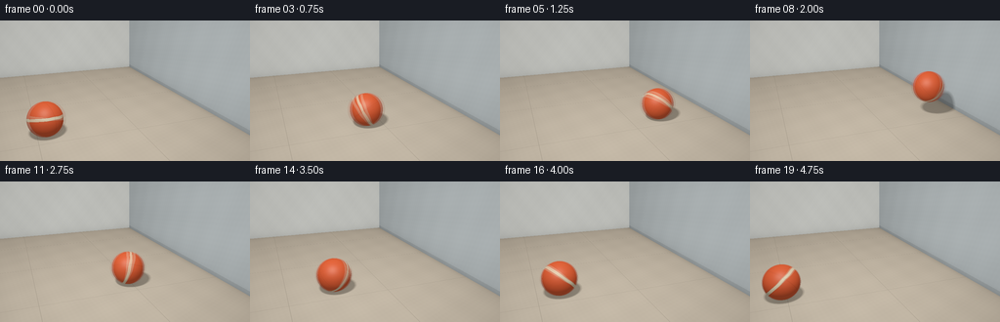
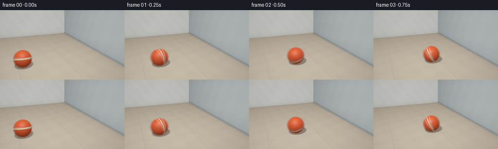

CODING AGENTS AS PIXEL WORLD MODELS
traex/GPT-6.1-Sol · mechanics_0039
点击播放 · 原生 RGB 像素
逐轮保存的候选
回放视频、检查图与代码变化。
每份候选均可单独播放。实际图片检查记录在下方工具轨迹中。
候选 01播放与检查图
点击播放 · 原生 RGB 像素


展开代码变化
--- 上一保存版本
+++ 本次保存版本
@@ -0,0 +1,258 @@
+"""A small, self-contained numpy ray renderer for the requested rubber-ball action.
+No assets, learned models, or rendering/simulation packages are used.
+"""
+from pathlib import Path
+import json
+import math
+import numpy as np
+from PIL import Image
+import artifact_io
+
+ROOT = Path(__file__).resolve().parent
+SPEC = json.loads((ROOT / 'task_spec.json').read_text())
+W, H = SPEC['width'], SPEC['height']
+SS = 3
+SW, SH = W*SS, H*SS
+DTYPE = np.float32
+
+# Locked-off close view, angled so the wall's face and the floor contact are visible.
+CAM = np.array([-3.2, -8.0, 3.6], dtype=DTYPE)
+TARGET = np.array([0.0, 0.35, 0.75], dtype=DTYPE)
+FORWARD = TARGET-CAM
+FORWARD /= np.linalg.norm(FORWARD)
+RIGHT = np.cross(FORWARD, [0., 0., 1.]).astype(DTYPE)
+RIGHT /= np.linalg.norm(RIGHT)
+UP = np.cross(RIGHT, FORWARD)
+yy, xx = np.mgrid[0:SH, 0:SW].astype(DTYPE)
+u = ((xx+.5)/SS-W/2)/300
+v = (H/2-(yy+.5)/SS)/300
+RAYS = FORWARD + u[...,None]*RIGHT + v[...,None]*UP
+RAYS /= np.linalg.norm(RAYS, axis=-1, keepdims=True)
+LIGHT = np.array([-3.5,-4.0,6.8], dtype=DTYPE)
+
+# Explicit ray/plane intersections: floor, impact wall on the right, rear wall.
+plane_t = []
+for axis, value in [(2,0.),(0,2.6),(1,6.5)]:
+ t=(value-CAM[axis])/RAYS[...,axis]
+ plane_t.append(np.where(t>0,t,np.inf))
+T = np.min(plane_t,axis=0)
+SURFACE = np.argmin(plane_t,axis=0)
+P = CAM+T[...,None]*RAYS
+N = np.zeros_like(P)
+N[SURFACE==0] = [0,0,1]
+N[SURFACE==1] = [-1,0,0]
+N[SURFACE==2] = [0,-1,0]
+
+
+def noise3(p, scale=1.):
+ p=p*scale
+ return (np.sin(p[...,0]*1.317+p[...,1]*1.829+p[...,2]*2.11)*
+ np.sin(p[...,0]*2.723-p[...,1]*1.391+p[...,2]*.873))
+
+
+def environment():
+ material=np.zeros_like(P)
+ floor=(SURFACE==0)
+ side=(SURFACE==1)
+ rear=(SURFACE==2)
+ # Warm, finely mottled concrete and cool painted plaster.
+ material[floor]=[.48,.425,.345]
+ material[side]=[.405,.46,.49]
+ material[rear]=[.515,.54,.53]
+ broad=.025*noise3(P,1.6)+.012*noise3(P,12)+.008*noise3(P,83)
+ material *= 1+broad[...,None]
+ # Hairline expansion joints on the floor, in world-space perspective.
+ def dist_grid(q,step,phase=0):
+ return np.abs((q+phase+step/2)%step-step/2)
+ seam=np.minimum(dist_grid(P[...,0],2.75,.1),dist_grid(P[...,1],2.75,.95))
+ joint=np.exp(-((seam/.010)**2))*floor
+ edge=np.exp(-(((seam-.021)/.010)**2))*floor
+ material*=1-.20*joint[...,None]+.018*edge[...,None]
+ # Small casting pores; not pixel noise, so textures stay fixed throughout.
+ pores=np.maximum(0,noise3(P,140)-.83)
+ material*=1-.13*pores[...,None]
+ # Subtle lower wall plinth and a thin dark wall-floor contact line.
+ skirt=side & (P[...,2]<.13)
+ material[skirt]*=.82
+ rim=np.exp(-((P[...,2]-.13)/.005)**2)*side
+ material*=1-.08*rim[...,None]
+ L=LIGHT-P
+ distance=np.linalg.norm(L,axis=-1)
+ L/=distance[...,None]
+ diffuse=np.maximum(0,np.sum(N*L,axis=-1))
+ lighting=.47+diffuse*.88
+ lighting*=np.clip(1.08-(distance-8)*.032,.74,1.18)
+ # Ambient occlusion at the two architectural joins.
+ wall_dist=np.maximum(0,2.6-P[...,0])
+ rear_dist=np.maximum(0,6.5-P[...,1])
+ ao=np.ones_like(T)
+ ao[floor]*=1-.23*np.exp(-wall_dist[floor]/.17)-.15*np.exp(-rear_dist[floor]/.20)
+ ao[side]*=1-.23*np.exp(-P[...,2][side]/.17)
+ ao[rear]*=1-.18*np.exp(-P[...,2][rear]/.17)
+ base=material*lighting[...,None]*ao[...,None]
+ # Warm broad key illumination with softly blue ambient in the wall.
+ base*=np.array([1.04,1.005,.96],dtype=DTYPE)
+ return base
+
+BASE=environment()
+
+
+def motion(t):
+ """Contact at 1.75s, then a damped rebound and smaller floor bounces."""
+ contact=1.75
+ tau=t-contact
+ squeeze=math.exp(-((tau/.065)**2))
+ if tau<=0:
+ x=-2.60+(4.72/contact)*max(t,0)+.11*squeeze
+ z=.48+.08*squeeze
+ else:
+ x=2.12-2.65*tau+.32*tau*tau+.11*squeeze
+ # Analytic ballistic hops; a low restitution dissipates the bounce.
+ z0=.56
+ vv=2.8
+ g=9.8
+ hit=(vv+math.sqrt(vv*vv+2*g*(z0-.48)))/g
+ if tau < hit:
+ z=z0+vv*tau-.5*g*tau*tau
+ else:
+ elapsed=tau-hit
+ vv=math.sqrt(2*g*(z0-.48)+vv*vv)*.53
+ z=.48
+ for _ in range(9):
+ duration=2*vv/g
+ if elapsed<=duration:
+ z=.48+vv*elapsed-.5*g*elapsed*elapsed
+ break
+ elapsed-=duration
+ vv*=.53
+ if vv<.025: break
+ radii=np.array([.48-.11*squeeze,.48+.035*squeeze,.48+.08*squeeze],dtype=DTYPE)
+ # Slightly flattened first contact on the floor; wall squash is more pronounced.
+ if tau>0 and z<.495:
+ radii[2]=.468
+ radii[0]=max(radii[0],.487)
+ radii[1]=max(radii[1],.487)
+ z=max(z,.468)
+ c=np.array([x,-.45,z],dtype=DTYPE)
+ # Rotation matches the initial roll, then reverses and continues on rebound.
+ if tau<=0:
+ theta=(x+2.60)/.48
+ else:
+ theta=4.72/.48+(x-2.12)/.48
+ return c,radii,theta
+
+
+def shadow_background(center,radii):
+ shadow=np.zeros((SH,SW),dtype=DTYPE)
+ # Deterministic disk samples of a large softbox, for a penumbra rather than a cutout.
+ offsets=[(0,0),(.43,0),(-.43,0),(0,.43),(0,-.43),(.30,.30),(-.30,.30),(.30,-.30),(-.30,-.30)]
+ origin=(P+N*.002-center)/radii
+ cc=np.sum(origin*origin,axis=-1)-1
+ for ox,oy in offsets:
+ lp=LIGHT+np.array([ox,oy,0],dtype=DTYPE)
+ d=(lp-P)/radii
+ a=np.sum(d*d,axis=-1)
+ b=np.sum(origin*d,axis=-1)
+ disc=b*b-a*cc
+ near=(-b-np.sqrt(np.maximum(0,disc)))/a
+ shadow+=((disc>0)&(near>0)&(near<1)).astype(DTYPE)
+ shadow/=len(offsets)
+ result=BASE*(1-.57*shadow[...,None])
+ # Soft occlusion grows darker and tighter as the ball approaches the floor.
+ floor=(SURFACE==0)
+ height=max(center[2]-radii[2],0)
+ dx=P[...,0]-center[0]
+ dy=P[...,1]-center[1]
+ ao=np.exp(-((dx/(.38+height*.21))**2+(dy/(.30+height*.15))**2)*1.8)
+ ao*=floor*.23*math.exp(-height/.34)
+ result*=1-ao[...,None]
+ return result
+
+
+def ball_layer(background,center,radii,theta):
+ # Exact ray/ellipsoid intersection, with geometric normals and spherical markings.
+ o=(CAM-center)/radii
+ d=RAYS/radii
+ aa=np.sum(d*d,axis=-1)
+ bb=np.sum(d*o,axis=-1)
+ cc=np.dot(o,o)-1
+ discriminant=bb*bb-aa*cc
+ t=(-bb-np.sqrt(np.maximum(0,discriminant)))/aa
+ mask=(discriminant>=0)&(t>0)&(t<T)
+ result=background.copy()
+ hit=CAM+RAYS[mask]*t[mask,None]
+ sphere=(hit-center)/radii
+ norm=(hit-center)/(radii*radii)
+ norm/=np.linalg.norm(norm,axis=-1,keepdims=True)
+ # Rolling rotation around the transverse axis.
+ cs,sn=math.cos(theta),math.sin(theta)
+ local=sphere.copy()
+ local[:,0]=cs*sphere[:,0]-sn*sphere[:,2]
+ local[:,2]=sn*sphere[:,0]+cs*sphere[:,2]
+ # A recognizable rubber play ball, not a featureless smooth CG sphere.
+ color=np.tile(np.array([.77,.105,.033],dtype=DTYPE),(len(hit),1))
+ wave=.009*np.sin(local[:,0]*7+local[:,1]*5)
+ band_coord=local[:,2]+.26*local[:,1]+wave-.10
+ band=np.abs(band_coord)<.085
+ color[band]=[.84,.715,.48]
+ # Fine mould seams lie in the red panels and along the cream stripe.
+ bandedge=np.exp(-((np.abs(band_coord)-.086)/.0065)**2)
+ meridian=np.abs(.88*local[:,0]+.475*local[:,1])
+ groove=np.exp(-(meridian/.012)**2)
+ color*=1-(.36*bandedge+.23*groove)[:,None]
+ micro=noise3(local,190)
+ mottling=noise3(local,11)
+ color*=1+.023*micro[:,None]+.016*mottling[:,None]
+ L=LIGHT-hit
+ L/=np.linalg.norm(L,axis=-1,keepdims=True)
+ diffuse=np.maximum(0,np.sum(norm*L,axis=-1))
+ # Rubber's broad sheen, a smaller highlight and subtle surface microtexture.
+ V=CAM-hit
+ V/=np.linalg.norm(V,axis=-1,keepdims=True)
+ halfway=L+V
+ halfway/=np.linalg.norm(halfway,axis=-1,keepdims=True)
+ nh=np.maximum(0,np.sum(norm*halfway,axis=-1))
+ ambient=.31+.17*np.maximum(0,norm[:,2])
+ ambient-=.13*np.exp(-np.maximum(hit[:,2],0)/.12)
+ ambient-=.08*np.exp(-np.maximum(2.6-hit[:,0],0)/.12)
+ shaded=color*(ambient+.82*diffuse)[:,None]
+ gloss=.12*nh**28+.025*nh**6
+ gloss*=1+.04*micro
+ shaded+=gloss[:,None]*np.array([1,.91,.76],dtype=DTYPE)
+ # Slight warm floor bounce along the underside.
+ shaded+=np.maximum(0,-norm[:,2])[:,None]*np.array([.040,.016,.007],dtype=DTYPE)
+ result[mask]=shaded
+ return result
+
+
+def output_transform(linear):
+ # A gentle film shoulder, sRGB conversion, and minimal lens vignette.
+ linear=np.maximum(linear,0)
+ mapped=linear/(1+.25*linear)
+ srgb=np.where(mapped<=.0031308,12.92*mapped,1.055*mapped**(1/2.4)-.055)
+ vignette=1-.065*((xx-SW/2)/(SW/2))**2-.045*((yy-SH/2)/(SH/2))**2
+ srgb*=vignette[...,None]
+ rgb=np.uint8(np.clip(srgb*255+.5,0,255))
+ return np.asarray(Image.fromarray(rgb,'RGB').resize((W,H),Image.Resampling.LANCZOS))
+
+
+def main():
+ frames=[]
+ for i in range(SPEC['frames']):
+ t=i/SPEC['fps']
+ center,radii,theta=motion(t)
+ background=shadow_background(center,radii)
+ # Short photographic exposure: enough velocity blur to imply a forceful roll.
+ exposure=.034 if i==7 else .052
+ accum=np.zeros_like(BASE)
+ for shift,weight in [(-.5,.20),(0,.60),(.5,.20)]:
+ c,r,a=motion(max(0,t+shift*exposure))
+ accum+=weight*ball_layer(background,c,r,a)
+ frames.append(output_transform(accum))
+ print(f'frame {i:02d}: center {np.round(center,3)}',flush=True)
+ frames=np.stack(frames).astype(np.uint8)
+ artifact_io.save(frames,ROOT)
+ print(f'Saved {frames.shape} RGB video at {SPEC["fps"]} fps.',flush=True)
+
+if __name__=='__main__':
+ main()
可观测工具轨迹
实际执行的命令与返回图片。
命令 1exit 0
/bin/bash -lc "ls -la && cat prompt.txt && printf '\\n---RULES---\\n' && cat GENERATION_RULES.md && printf '\\n---SPEC---\\n' && cat task_spec.json"
命令 2exit 0
/bin/bash -lc "cat artifact_io.py && printf '\\n---AVAILABLE---\\n' && python - <<'PY'
import numpy, PIL
print('numpy',numpy.__version__,'PIL',PIL.__version__)
PY"命令 3exit 0
/bin/bash -lc "python - <<'PY' import numpy as np C=np.array([-3.,-8.,3.2]);target=np.array([0,.2,.8]);fwd=(target-C);fwd/=np.linalg.norm(fwd);right=np.cross(fwd,[0,0,1]);right/=np.linalg.norm(right);up=np.cross(right,fwd);f=285 for p in [[-2.3,.2,.35],[2.15,.2,.35],[2.5,.2,0],[-2.3,.2,0],[2.5,4,0],[-6,4,0],[-6,4,4],[2.5,-3,0]]: q=np.array(p)-C;print(p,np.round([128+f*np.dot(q,right)/np.dot(q,fwd),72-f*np.dot(q,up)/np.dot(q,fwd)],2), 'r',np.round(f*.35/np.dot(q,fwd),2)) PY"
命令 4exit 0
/bin/bash -lc "python - <<'PY' import numpy as np C=np.array([-3.2,-8.,3.6]);target=np.array([0,.35,.75]);fwd=target-C;fwd/=np.linalg.norm(fwd);right=np.cross(fwd,[0,0,1]);right/=np.linalg.norm(right);up=np.cross(right,fwd);f=300 for p in [[-2.6,-.45,.48],[2.12,-.45,.48],[2.6,-.45,0],[2.6,5,0],[-2.6,-.45,0],[2.12,-.45,1.0],[2.6,-3,0],[-6,5,0],[-6,5,5]]: q=np.array(p)-C;print(p,np.round([128+f*np.dot(q,right)/np.dot(q,fwd),72-f*np.dot(q,up)/np.dot(q,fwd)],2),'r',round(f*.48/np.dot(q,fwd),2)) PY"
命令 5exit 0
/bin/bash -lc "cat > generate.py <<'PY'
\"\"\"A small, self-contained numpy ray renderer for the requested rubber-ball action.
No assets, learned models, or rendering/simulation packages are used.
\"\"\"
from pathlib import Path
import json
import math
import numpy as np
from PIL import Image
import artifact_io
ROOT = Path(__file__).resolve().parent
SPEC = json.loads((ROOT / 'task_spec.json').read_text())
W, H = SPEC['width'], SPEC['height']
SS = 3
SW, SH = W*SS, H*SS
DTYPE = np.float32
# Locked-off close view, angled so the wall's face and the floor contact are visible.
CAM = np.array([-3.2, -8.0, 3.6], dtype=DTYPE)
TARGET = np.array([0.0, 0.35, 0.75], dtype=DTYPE)
FORWARD = TARGET-CAM
FORWARD /= np.linalg.norm(FORWARD)
RIGHT = np.cross(FORWARD, [0., 0., 1.]).astype(DTYPE)
RIGHT /= np.linalg.norm(RIGHT)
UP = np.cross(RIGHT, FORWARD)
yy, xx = np.mgrid[0:SH, 0:SW].astype(DTYPE)
u = ((xx+.5)/SS-W/2)/300
v = (H/2-(yy+.5)/SS)/300
RAYS = FORWARD + u[...,None]*RIGHT + v[...,None]*UP
RAYS /= np.linalg.norm(RAYS, axis=-1, keepdims=True)
LIGHT = np.array([-3.5,-4.0,6.8], dtype=DTYPE)
# Explicit ray/plane intersections: floor, impact wall on the right, rear wall.
plane_t = []
for axis, value in [(2,0.),(0,2.6),(1,6.5)]:
t=(value-CAM[axis])/RAYS[...,axis]
plane_t.append(np.where(t>0,t,np.inf))
T = np.min(plane_t,axis=0)
SURFACE = np.argmin(plane_t,axis=0)
P = CAM+T[...,None]*RAYS
N = np.zeros_like(P)
N[SURFACE==0] = [0,0,1]
N[SURFACE==1] = [-1,0,0]
N[SURFACE==2] = [0,-1,0]
def noise3(p, scale=1.):
p=p*scale
return (np.sin(p[...,0]*1.317+p[...,1]*1.829+p[...,2]*2.11)*
np.sin(p[...,0]*2.723-p[...,1]*1.391+p[...,2]*.873))
def environment():
material=np.zeros_like(P)
floor=(SURFACE==0)
side=(SURFACE==1)
rear=(SURFACE==2)
# Warm, finely mottled concrete and cool painted plaster.
material[floor]=[.48,.425,.345]
material[side]=[.405,.46,.49]
material[rear]=[.515,.54,.53]
broad=.025*noise3(P,1.6)+.012*noise3(P,12)+.008*noise3(P,83)
material *= 1+broad[...,None]
# Hairline expansion joints on the floor, in world-space perspective.
def dist_grid(q,step,phase=0):
return np.abs((q+phase+step/2)%step-step/2)
seam=np.minimum(dist_grid(P[...,0],2.75,.1),dist_grid(P[...,1],2.75,.95))
joint=np.exp(-((seam/.010)**2))*floor
edge=np.exp(-(((seam-.021)/.010)**2))*floor
material*=1-.20*joint[...,None]+.018*edge[...,None]
# Small casting pores; not pixel noise, so textures stay fixed throughout.
pores=np.maximum(0,noise3(P,140)-.83)
material*=1-.13*pores[...,None]
# Subtle lower wall plinth and a thin dark wall-floor contact line.
skirt=side & (P[...,2]<.13)
material[skirt]*=.82
rim=np.exp(-((P[...,2]-.13)/.005)**2)*side
material*=1-.08*rim[...,None]
L=LIGHT-P
distance=np.linalg.norm(L,axis=-1)
L/=distance[...,None]
diffuse=np.maximum(0,np.sum(N*L,axis=-1))
lighting=.47+diffuse*.88
lighting*=np.clip(1.08-(distance-8)*.032,.74,1.18)
# Ambient occlusion at the two architectural joins.
wall_dist=np.maximum(0,2.6-P[...,0])
rear_dist=np.maximum(0,6.5-P[...,1])
ao=np.ones_like(T)
ao[floor]*=1-.23*np.exp(-wall_dist[floor]/.17)-.15*np.exp(-rear_dist[floor]/.20)
ao[side]*=1-.23*np.exp(-P[...,2][side]/.17)
ao[rear]*=1-.18*np.exp(-P[...,2][rear]/.17)
base=material*lighting[...,None]*ao[...,None]
# Warm broad key illumination with softly blue ambient in the wall.
base*=np.array([1.04,1.005,.96],dtype=DTYPE)
return base
BASE=environment()
def motion(t):
\"\"\"Contact at 1.75s, then a damped rebound and smaller floor bounces.\"\"\"
contact=1.75
tau=t-contact
squeeze=math.exp(-((tau/.065)**2))
if tau<=0:
x=-2.60+(4.72/contact)*max(t,0)+.11*squeeze
z=.48+.08*squeeze
else:
x=2.12-2.65*tau+.32*tau*tau+.11*squeeze
# Analytic ballistic hops; a low restitution dissipates the bounce.
z0=.56
vv=2.8
g=9.8
hit=(vv+math.sqrt(vv*vv+2*g*(z0-.48)))/g
if tau < hit:
z=z0+vv*tau-.5*g*tau*tau
else:
elapsed=tau-hit
vv=math.sqrt(2*g*(z0-.48)+vv*vv)*.53
z=.48
for _ in range(9):
duration=2*vv/g
if elapsed<=duration:
z=.48+vv*elapsed-.5*g*elapsed*elapsed
break
elapsed-=duration
vv*=.53
if vv<.025: break
radii=np.array([.48-.11*squeeze,.48+.035*squeeze,.48+.08*squeeze],dtype=DTYPE)
# Slightly flattened first contact on the floor; wall squash is more pronounced.
if tau>0 and z<.495:
radii[2]=.468
radii[0]=max(radii[0],.487)
radii[1]=max(radii[1],.487)
z=max(z,.468)
c=np.array([x,-.45,z],dtype=DTYPE)
# Rotation matches the initial roll, then reverses and continues on rebound.
if tau<=0:
theta=(x+2.60)/.48
else:
theta=4.72/.48+(x-2.12)/.48
return c,radii,theta
def shadow_background(center,radii):
shadow=np.zeros((SH,SW),dtype=DTYPE)
# Deterministic disk samples of a large softbox, for a penumbra rather than a cutout.
offsets=[(0,0),(.43,0),(-.43,0),(0,.43),(0,-.43),(.30,.30),(-.30,.30),(.30,-.30),(-.30,-.30)]
origin=(P+N*.002-center)/radii
cc=np.sum(origin*origin,axis=-1)-1
for ox,oy in offsets:
lp=LIGHT+np.array([ox,oy,0],dtype=DTYPE)
d=(lp-P)/radii
a=np.sum(d*d,axis=-1)
b=np.sum(origin*d,axis=-1)
disc=b*b-a*cc
near=(-b-np.sqrt(np.maximum(0,disc)))/a
shadow+=((disc>0)&(near>0)&(near<1)).astype(DTYPE)
shadow/=len(offsets)
result=BASE*(1-.57*shadow[...,None])
# Soft occlusion grows darker and tighter as the ball approaches the floor.
floor=(SURFACE==0)
height=max(center[2]-radii[2],0)
dx=P[...,0]-center[0]
dy=P[...,1]-center[1]
ao=np.exp(-((dx/(.38+height*.21))**2+(dy/(.30+height*.15))**2)*1.8)
ao*=floor*.23*math.exp(-height/.34)
result*=1-ao[...,None]
return result
def ball_layer(background,center,radii,theta):
# Exact ray/ellipsoid intersection, with geometric normals and spherical markings.
o=(CAM-center)/radii
d=RAYS/radii
aa=np.sum(d*d,axis=-1)
bb=np.sum(d*o,axis=-1)
cc=np.dot(o,o)-1
discriminant=bb*bb-aa*cc
t=(-bb-np.sqrt(np.maximum(0,discriminant)))/aa
mask=(discriminant>=0)&(t>0)&(t<T)
result=background.copy()
hit=CAM+RAYS[mask]*t[mask,None]
sphere=(hit-center)/radii
norm=(hit-center)/(radii*radii)
norm/=np.linalg.norm(norm,axis=-1,keepdims=True)
# Rolling rotation around the transverse axis.
cs,sn=math.cos(theta),math.sin(theta)
local=sphere.copy()
local[:,0]=cs*sphere[:,0]-sn*sphere[:,2]
local[:,2]=sn*sphere[:,0]+cs*sphere[:,2]
# A recognizable rubber play ball, not a featureless smooth CG sphere.
color=np.tile(np.array([.77,.105,.033],dtype=DTYPE),(len(hit),1))
wave=.009*np.sin(local[:,0]*7+local[:,1]*5)
band_coord=local[:,2]+.26*local[:,1]+wave-.10
band=np.abs(band_coord)<.085
color[band]=[.84,.715,.48]
# Fine mould seams lie in the red panels and along the cream stripe.
bandedge=np.exp(-((np.abs(band_coord)-.086)/.0065)**2)
meridian=np.abs(.88*local[:,0]+.475*local[:,1])
groove=np.exp(-(meridian/.012)**2)
color*=1-(.36*bandedge+.23*groove)[:,None]
micro=noise3(local,190)
mottling=noise3(local,11)
color*=1+.023*micro[:,None]+.016*mottling[:,None]
L=LIGHT-hit
L/=np.linalg.norm(L,axis=-1,keepdims=True)
diffuse=np.maximum(0,np.sum(norm*L,axis=-1))
# Rubber's broad sheen, a smaller highlight and subtle surface microtexture.
V=CAM-hit
V/=np.linalg.norm(V,axis=-1,keepdims=True)
halfway=L+V
halfway/=np.linalg.norm(halfway,axis=-1,keepdims=True)
nh=np.maximum(0,np.sum(norm*halfway,axis=-1))
ambient=.31+.17*np.maximum(0,norm[:,2])
ambient-=.13*np.exp(-np.maximum(hit[:,2],0)/.12)
ambient-=.08*np.exp(-np.maximum(2.6-hit[:,0],0)/.12)
shaded=color*(ambient+.82*diffuse)[:,None]
gloss=.12*nh**28+.025*nh**6
gloss*=1+.04*micro
shaded+=gloss[:,None]*np.array([1,.91,.76],dtype=DTYPE)
# Slight warm floor bounce along the underside.
shaded+=np.maximum(0,-norm[:,2])[:,None]*np.array([.040,.016,.007],dtype=DTYPE)
result[mask]=shaded
return result
def output_transform(linear):
# A gentle film shoulder, sRGB conversion, and minimal lens vignette.
linear=np.maximum(linear,0)
mapped=linear/(1+.25*linear)
srgb=np.where(mapped<=.0031308,12.92*mapped,1.055*mapped**(1/2.4)-.055)
vignette=1-.065*((xx-SW/2)/(SW/2))**2-.045*((yy-SH/2)/(SH/2))**2
srgb*=vignette[...,None]
rgb=np.uint8(np.clip(srgb*255+.5,0,255))
return np.asarray(Image.fromarray(rgb,'RGB').resize((W,H),Image.Resampling.LANCZOS))
def main():
frames=[]
for i in range(SPEC['frames']):
t=i/SPEC['fps']
center,radii,theta=motion(t)
background=shadow_background(center,radii)
# Short photographic exposure: enough velocity blur to imply a forceful roll.
exposure=.034 if i==7 else .052
accum=np.zeros_like(BASE)
for shift,weight in [(-.5,.20),(0,.60),(.5,.20)]:
c,r,a=motion(max(0,t+shift*exposure))
accum+=weight*ball_layer(background,c,r,a)
frames.append(output_transform(accum))
print(f'frame {i:02d}: center {np.round(center,3)}',flush=True)
frames=np.stack(frames).astype(np.uint8)
artifact_io.save(frames,ROOT)
print(f'Saved {frames.shape} RGB video at {SPEC[\"fps\"]} fps.',flush=True)
if __name__=='__main__':
main()
PY
python generate.py"命令 6exit 0
/bin/bash -lc "python - <<'PY'
from pathlib import Path
import json,numpy as np
from PIL import Image
p=Path('.')
s=json.loads((p/'task_spec.json').read_text())
a=np.load(p/'pixels.npz')['pixels']
assert a.shape==(s['height'],s['width'],s['frames'])
assert len(list((p/'frames').glob('*.png')))==s['frames']
for f in sorted((p/'frames').glob('*.png')):
im=Image.open(f)
assert im.mode=='RGB' and im.size==(256,144)
print('Verified:',a.shape,'packed RGB; 20 RGB PNG frames; player:',(p/'index.html').exists())
print('RGB ranges:',np.asarray(Image.open('frames/00.png')).min(),np.asarray(Image.open('frames/00.png')).max())
PY
command -v ffmpeg || true
ls -lh pixels.npz index.html inspection.png generate.py"保存候选 1 份；完成命令 6 次；可验证图片返回 0 张。原始 API 响应与完整日志保留在本地。